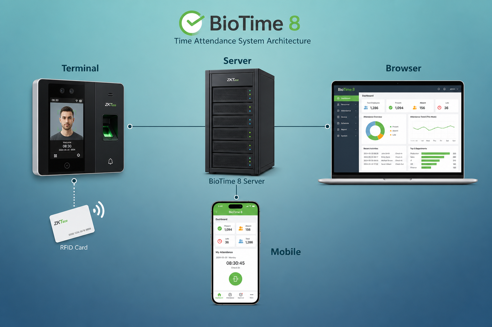
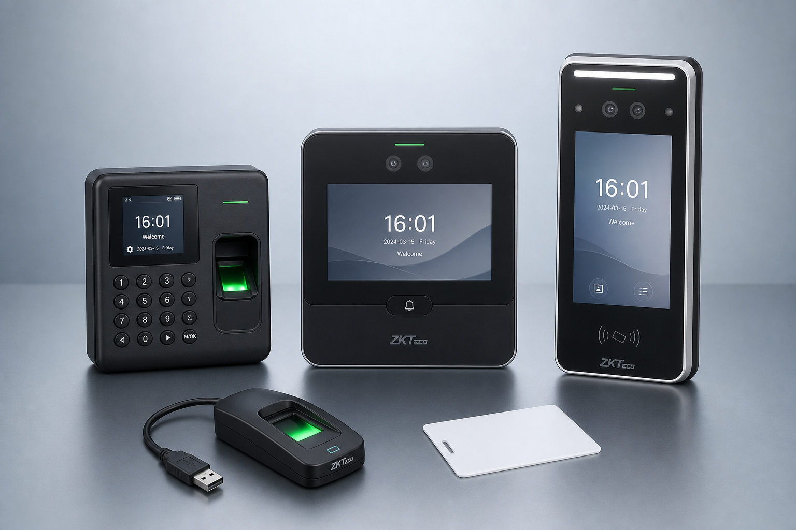
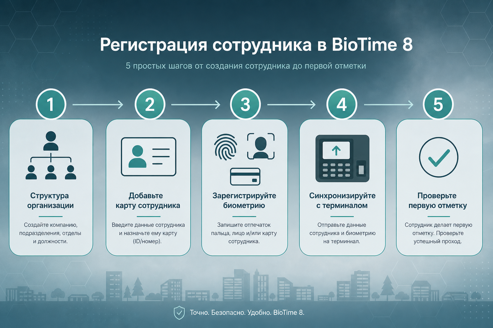
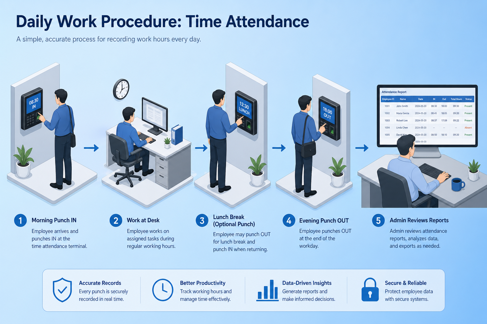

01 · Суть системы
Частное облако для УРВ и СКУД
BioTime 8 (ZKBio Time / BioTA 8) — веб-серверное ПО ZKTeco для учёта рабочего времени, посещаемости и (опционально) контроля доступа. Сервер ставится в локальной сети; администраторы и сотрудники работают через браузер и мобильное приложение.

Что делает система
- Собирает отметки с биометрических терминалов (лицо, отпечаток, карта, QR, пароль)
- Считает смены, опоздания, переработки, отсутствия по правилам компании
- Строит табели и отчёты, рассылает их по e-mail
- Интегрируется с 1С, LDAP, IIKO, Telegram-ботом и мобильным приложением
Масштаб
- До ~500 устройств на один сервер
- Тысячи сотрудников, сотни терминалов
- Протокол PUSH / ADMS (Cloud Server) — терминал сам шлёт данные на сервер
02 · Оборудование
Терминалы и периферия
К BioTime 8 подключаются автономные терминалы ZKTeco с прошивкой Attendance PUSH (ADMS). Режим устройства для УРВ — «Учёт рабочего времени», не «СКУД».

Основные серии терминалов
- SpeedFace — лицо (Visible Light): V4L, V5L, H5L, M-серия
- MB / MB-VL — лицо + отпечаток: MB360, MB460, MB560-VL
- uFace / Face — мультимодальные терминалы лица
- Silk / KF / UA / IN — отпечаток и карты
- Green Label / FaceKiosk / Horus — киоски и Android-устройства
USB-регистраторы (на ПК)
- Отпечаток: ZK8500R, ZK9500, SLK20R
- Ладонь: PV10R
- Лицо: FA10R
Идентификаторы: отпечаток, лицо, ладонь, RFID/MIFARE, PIN, QR-код.
192.168.1.201, порт сервера BioTime часто 80 или 8088.
03 · Программное обеспечение
Модули веб-платформы
После установки открывается веб-интерфейс. На панели — шесть основных модулей.
Персонал
Отделы, должности, зоны, карточки сотрудников, документы, кадровые перемещения.
Устройство
Список терминалов, зоны, синхронизация, удалённая регистрация биометрии, журналы событий.
Посещение
Расписания, смены, графики, перерывы, подсчёт УРВ, отчёты, ручные корректировки.
Доступ / Оплата / Система
СКУД (опционально), расчёт зарплатных переменных, роли пользователей, бэкапы, SMTP, лицензия.
Системные требования
| ОС | Windows 7/8/10 или Server 2008–2019, только 64-bit |
|---|---|
| CPU / RAM / диск | от 2 ГГц · от 4 ГБ ОЗУ · от 100 ГБ свободного места (NTFS) |
| БД | PostgreSQL (по умолчанию), также MSSQL, MySQL, Oracle |
| Браузеры | Chrome 33+, Firefox 27+, IE 11+ (рекомендуются Chrome / Яндекс.Браузер) |
| Архитектура | Сервер + браузер; доступ по IP:порт из локальной сети |
04 · Установка и первый вход
От дистрибутива до суперадмина
- Установка Запуск setup.exe от имени администратора → путь → порт веб-доступа и исключение в firewall → БД (PostgreSQL или своя) → путь бэкапа → перезагрузка.
-
Запуск служб
ZKBio Time Platform / Server Controller → Start. Открыть ярлык Home Page или URL
http://IP:порт. - Суперадминистратор При первом входе создать учётную запись (логин, e-mail, пароль). Далее — роли для кадровиков и табельщиков.
- Лицензия «О программе» → онлайн-активация (файл SN.xml) или офлайн (UPK → License.xml). Лицензия привязана к железу сервера.
- Бэкап Система → База данных → включить автоматическое резервное копирование.
05 · Подключение терминала
Автодобавление через Cloud Server
- Сеть на терминале Меню → COMM → Ethernet: IP в той же подсети, что и сервер BioTime.
- Cloud Server (ADMS) COMM → Cloud Server Setting: Enable = ON, Server Address = IP сервера, Port = порт BioTime (часто 80/8088). HTTPS — только если включён на сервере.
- Режим УРВ Для SpeedFace и аналогов убедиться, что выбран режим учёта рабочего времени (не Access Control).
- Появление в ПО Устройство → список устройств: статус Online (зелёный). Если нет — добавить вручную: имя, SN, IP, зона, часовой пояс.
06 · Регистрация сотрудников
От структуры компании до биометрии
Порядок сверху вниз: отделы → должности → зоны → сотрудники → идентификаторы → синхронизация на терминал.

- Структура Персонал → Отделы / Должности / Зоны. Без корректной зоны синхронизация с терминалом не сработает.
- Карточка сотрудника Персонал → Сотрудник → Добавить: ID, ФИО, отдел, должность, зона, вид трудоустройства, дата найма. Аватар — отдельно от био-шаблона лица.
- Настройка устройств в карточке Режим проверки (что обязательно: лицо / палец / карта), права на терминале (обычно «Сотрудник», не админ), номер карты.
-
Биометрия
• Через USB-сканер на ПК
• Удалённо через сетевой терминал (команда регистрации с сервера)
• Лицо по фото: загрузка портрета → счётчик «Кол-во лиц» +1 - Синхронизация Выбрать сотрудников → Ещё → Синхронизировать с устройством (или синхронизация по зоне). Проверить первую отметку на терминале.
07 · Правила учёта
Расписание → Смена → График → Отчёт
Отчёты УРВ строятся не из «сырых» проходов, а после сопоставления отметок с правилами.
Фиксированное расписание
Жёсткие окна прихода/ухода (например 09:00–18:00). Вне окна — риск «прогула» в отчёте.
Гибкое расписание
Задаётся интервал дня и обязательная норма часов. Важно отработать норму, а не точное время входа.
- Перерывы Посещение → Смены → Перерывы: вычитаются из отработанного или учитываются по отметкам.
- Назначение графика По отделам / группам / сотрудникам на период (например месяц).
- Подсчёт Посещение → Подсчёт: выбрать людей и период. Рекомендуется даже при автоподсчёте — особенно «день в день».
- Отчёты «Операции» = факт проходов. Табели и аналитика = после подсчёта по правилам. Экспорт XLS/PDF, авторассылка SMTP.
08 · Ежедневная работа
Как живут сотрудники и администратор

Сотрудник у терминала
- Утром — идентификация (лицо / палец / карта) → статус «Приход»
- При необходимости — отметки перерыва
- Вечером — «Уход»
- Альтернативы: мобильное приложение, виртуальная проходная, QR / Telegram-бот
Администратор / кадровик
- Контроль Online-статуса терминалов
- Ручные отметки, отпуска, сверхурочные
- Подсчёт за период и выгрузка табеля
- Кадровые перемещения и смена графиков
09 · Быстрый чек-лист запуска
Минимум для рабочей системы
- СерверУстановлен BioTime 8, службы запущены, лицензия активна, бэкап включён.
- СетьТерминалы в одной подсети, Cloud Server указывает на IP:порт сервера, режим УРВ.
- ОргструктураОтделы, должности, рабочие зоны созданы.
- ЛюдиСотрудники заведены, биометрия/карты зарегистрированы, синхронизированы на устройства.
- ПравилаРасписания → смены → графики назначены; выполнен пробный подсчёт и проверен отчёт.
- ЭксплуатацияSMTP/автоотчёты по желанию; интеграция с 1С при необходимости.